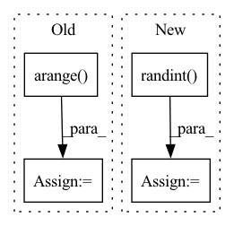

Pattern ID :34224

Before Change
neg_idxs = torch.randint(low=0, high=high, size=(bsz, self.n_negatives * tsz))
if self.sample_distance is not None and self.sample_distance < tsz:
neg_idxs += torch.cat(
[torch.arange(start=1, end=tsz - self.sample_distance, device=neg_idxs.device, dtype=neg_idxs.dtype),
torch.arange(start=tsz - self.sample_distance, end=tsz - self.sample_distance * 2 - 1, step=-1,
device=neg_idxs.device, dtype=neg_idxs.dtype)])
After Change
.flatten()
)
neg_idxs = torch.randint(
low=0, high=high - 1, size=(bsz, self.n_negatives * tsz)
)
neg_idxs[neg_idxs >= tszs] += 1
if self.cross_sample_negatives > 0:
tszs = (
In pattern: SUPERPATTERN
Frequency: 4
Non-data size: 4
Instances
Fragment ID: 98105755
Project Name: kssteven418/i-bert
Commit Name: 3335de5f441ee1b3824e16dcd98db620e40beaba
Time: 2020-02-29
Author: alexei.b@gmail.com
File Name: fairseq/models/wav2vec.py
M Class Name: Wav2VecPredictionsModel
N Class Name: Wav2VecPredictionsModel
M Method Name: sample_negatives(2)
N Method Name: sample_negatives(2)
M Parent Class: nn.Module
N Parent Class: nn.Module
M File Name: fairseq/models/wav2vec.py
N File Name: fairseq/models/wav2vec.py
M Start Line: 385
M End Line: 404
N Start Line: 583
N End Line: 629
'>
Before Change
hue, sat, val = cv2.split(cv2.cvtColor(img, cv2.COLOR_BGR2HSV))
dtype = img.dtype // uint8
x = np.arange(0, 256, dtype=np.int16)
lut_hue = ((x * r[0]) % 180).astype(dtype)
lut_sat = np.clip(x * r[1], 0, 255).astype(dtype)
lut_val = np.clip(x * r[2], 0, 255).astype(dtype)
After Change
def augment_hsv(img, hgain=5, sgain=30, vgain=30):
hsv_augs = np.random.uniform(-1, 1, 3) * [hgain, sgain, vgain] // random gains
hsv_augs *= np.random.randint(0, 2, 3) // random selection of h, s, v
img_hsv = cv2.cvtColor(img, cv2.COLOR_BGR2HSV)
dtype = img.dtype // uint8
'>
Fragment ID: 98105769
Project Name: megvii-basedetection/yolox
Commit Name: a5f629a6d28fcc3742ce9483698b3376ce457533
Time: 2021-10-13
Author: 35716746+LGD-Ti-fighting@users.noreply.github.com
File Name: yolox/data/data_augment.py
M Class Name: AnonimousClass
N Class Name: AnonimousClass
M Method Name: augment_hsv(4)
N Method Name: augment_hsv(4)
M Parent Class:
N Parent Class:
M File Name: yolox/data/data_augment.py
N File Name: yolox/data/data_augment.py
M Start Line: 22
M End Line: 33
N Start Line: 22
N End Line: 30
'>
Before Change
x1 = x1.unsqueeze(0).repeat(b, 1, 1, 1).requires_grad_(True)
x2 = x2.unsqueeze(0).repeat(b, 1, 1, 1).requires_grad_(True)
idx = torch.arange(b)
label = torch.arange(b)
batch, batch_idx = [idx, (x1, x2), label], 1
return batch, batch_idx
After Change
x2 = x2.unsqueeze(0).repeat(b, 1, 1, 1).requires_grad_(True)
idx = torch.arange(b)
label = torch.randint(low=0, high=n_classes, size=(b,))
batch, batch_idx = [idx, (x1, x2), label], 1
return batch, batch_idx
'>
Fragment ID: 98105761
Project Name: vturrisi/contrastive-learning
Commit Name: 3de0d99beef97288bb02b1234c59752a8931a09a
Time: 2021-06-15
Author: vt.turrisi@gmail.com
File Name: tests/methods/utils.py
M Class Name: AnonimousClass
N Class Name: AnonimousClass
M Method Name: gen_batch(3)
N Method Name: gen_batch(2)
M Parent Class:
N Parent Class:
M File Name: tests/methods/utils.py
N File Name: tests/methods/utils.py
M Start Line: 64
M End Line: 68
N Start Line: 54
N End Line: 71